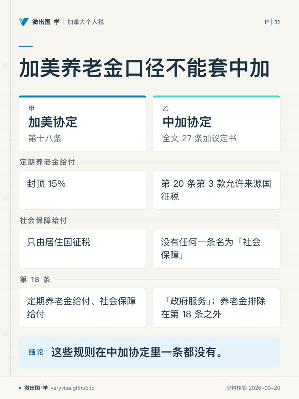
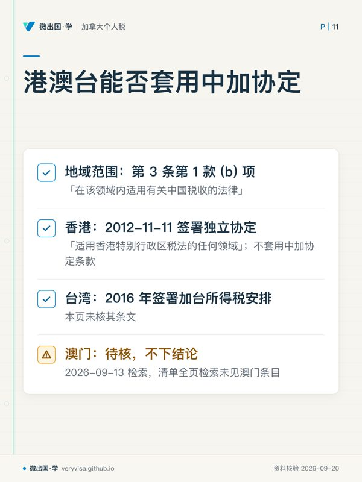

核实日期：2026-09-13｜现行口径：2026 税年（2027 年春季申报）｜协定文本：加拿大财政部（Department of Finance）网站 1986-05-12 签署版电子全文，逐条通读。联邦法条现行至 Justice Laws 2026-06-18 版本。 本页所有条款号与税率都回到协定原文或加拿大法条原文。中国一侧怎么征税、怎么抵免、国内法细则如何，本页一律不下结论——中方规定需另核中国官方原文。
在加拿大生活的中国读者，钱几乎总是跨着两国走：国内的房子在收租、股票在分红、银行在付息，父母在国内给钱，自己回国卖房，退休后又可能回国领加拿大的养老金。每一笔都会碰到同一个问题：加拿大收不收、中国收不收、两边都收了怎么办。 回答这个问题的上位文件是《中华人民共和国政府和加拿大政府关于对所得避免双重征税和防止偷漏税的协定》（Canada–China Income Tax Agreement，下称「中加协定」）。这一页把它逐条读一遍，只讲加拿大这一侧怎么用。
读完你应该能做到三件事：第一，判断自己在两国国内法下都算居民时，协定会把你判给哪一边、依据是第几条第几款；第二，对着一张加拿大来源收入清单说出协定把加拿大的 25% 预扣降到多少、哪几类完全不降；第三，作为加拿大居民收到中国来源收入时，知道中方已缴的税在加拿大 T1 上走哪张表、哪一行抵免。
本页假定你已经知道加拿大国内法怎么判居民（ca-residency-01-newcomers、ca-residency-02-residency-determination），离境税与非居民 25% 的基本机制在 ca-residency-03-emigrants-nonresidents。付款方怎么扣、表格链怎么走，在紧接着的 ca-residency-07-part-xiii-withholding-nr4-nr301。
ℹ️
本页的两条口径线
第一条是协定 vs 国内法：协定本身不创设任何税，它只在两国国内法都要征税时分配征税权、给来源国封顶。所以永远先问「加拿大国内法收不收」，再问「协定限不限」。 第二条是加拿大一侧 vs 中国一侧：同一条协定，两国各自按本国国内法执行。本页引用协定原文里写给中国的条款时，只复述条文，不推断中国税务机关的实际做法。
一、制度设计与底层逻辑：协定在两套国内法之间划线

1.1 协定解决的是「两个国家都想收」的问题
加拿大对居民就全球所得征税，对非居民只就加拿大来源的特定所得征税（ITA s.2(1) 与 s.2(3)，另见 ca-residency-03）。中国也有自己的居民与来源规则。一个人只要同时落进两边的网——比如在加拿大有住所、在国内也有住所；或者身在加拿大、收的是国内房租——就会出现同一笔所得被两国同时主张的局面。
中加协定对此只做三类动作（加拿大财政部）：
- 判居民：两边都算你居民时，第 4 条把你判给其中一边；
- 分配征税权：第 6 条到第 20 条逐类所得写明「只由居住国征税」「也可由来源国征税」或「来源国征税不超过 X%」；
- 消除剩下的双重征税：第 21 条要求居住国对来源国已征的税给抵免。
条文的措辞值得记住，因为它决定了读法：「may be taxed in that other Contracting State」（可以在对方国征税）表示对方国保留征税权，不代表居住国放弃；「shall be taxable only in that Contracting State」（仅在该国征税）才是排他分配。第 10 至 12 条的「shall not exceed 10 per cent / 15 per cent」是对来源国税率的封顶。
协定议定书第 4 项还有一句底线：协定条款不得被解释为以任何方式限制缔约国国内法或两国政府间其他协议给予的税收优惠（加拿大财政部）。换成大白话：协定只会让你少交，不会让你比国内法多交。如果加拿大国内法本来就免税（例如向无关联方支付的普通利息），就不需要协定出场。
1.2 法律地位与文本出处：你读到的是哪一份
协定于 1986 年 5 月 12 日在北京签署，以英文、法文、中文三种文本写成，三种文本同等作准（协定签署页，加拿大财政部）。加拿大财政部在「已生效税收协定」清单中列为「The Canada-China Income Tax Agreement as signed on May 12, 1986」（加拿大财政部）。
必须如实交代的一点：财政部网站上的电子版在页首明文声明「仅供参考、无官方效力」（「provided for convenience of reference only and has no official sanction」，加拿大财政部）。在加拿大，税收协定通过议会实施法获得国内法效力；该实施法的现行合订文本，本页于 2026-09-13 在 Justice Laws 法律目录中未能检得，待核。所以本页的做法是：条款号与税率以财政部电子版逐字核对，个案若涉及争议金额，回签署文本与实施法原文。
生效规则写在第 26 条：协定在两国互换外交照会后第 30 天生效；源泉扣缴税自生效年度的次年 1 月 1 日起适用，其他税种自该日或以后开始的纳税年度适用。第 27 条规定协定无限期有效，任一方可按程序书面通知终止。具体生效日期，财政部清单与电子版都没有写，本页标「待核」而不编日期。
⚠️
协定第 2 条列的中国税种是 1986 年的名字
第 2 条第 1 款列举的中国税种是「个人所得税、中外合资经营企业所得税、外国企业所得税、地方所得税」——这是签署当年的税制。第 2 条第 2 款规定协定同样适用于签署后新开征的、相同或实质相似的替代税种，并要求两国在合理期间内互相通知重大税法变化。所以读到条文里的旧税种名称，不能据此推出「现在的中国税种不在协定里」；具体哪些税被认定为替代税种，属于中方与主管当局的认定，需另核中国官方原文。
1.3 两步法：先国内法，后协定
这是本页所有判断的骨架，也是最常被跳过的一步。
第一步，只看加拿大国内法。 这笔钱加拿大收不收？按哪一部分收？比如非居民收加拿大股息，国内法是 ITA s.212(2) 的 25%（加拿大联邦法规库）；加拿大居民收中国房租，国内法是全球所得全额计入。
第二步，再看协定。 协定对这一类所得是封顶、排他分配、还是不管？股息被第 10 条封到 15%；中国房租由第 6 条允许中国征税，但并不拿走加拿大作为居住国的征税权，加拿大照样计入，靠第 21 条抵免解决重复。
两步的顺序反过来，就会出现「协定说中国可以征，所以加拿大不用报」这种错误——协定从来不替居住国放弃征税权，除非条文写的是「only」。
1.4 错了会怎样
协定层面的错误，在加拿大这一侧落成三种后果：
- 付款方按协定降率少扣，而收款人其实不合格：法定扣缴责任在付款方，应扣未扣部分由付款方全额承担（ITA s.215(6)），另罚应扣额 10%（s.227(8)）。这就是为什么付款方会要求非居民先交 Form NR301（见 ca-residency-07）。
- 加拿大居民没把中国所得报进 T1：属于漏报全球所得，补税加利息；中方已缴税款也就无从抵免。
- 在加拿大抵免了超过规则允许的中国税：s.126 抵免有限额，个人境外财产所得外国税超过 15% 的部分根本不进抵免（见 2.9），多抵的部分会被复评收回。
二、2026 税年现行规则：逐条读中加协定
2.1 居民与加破规则（第 4 条）
第 4 条第 1 款：「缔约国居民」指按该国法律，因住所、居所、总机构所在地、管理机构所在地或其他类似标准负有纳税义务的人（加拿大财政部）。协定不自己定义居民，而是借用两国国内法——所以要先分别走完加拿大的事实居民／视同居民判定，和中国一侧的居民判定（中方规定需另核中国官方原文）。
第 4 条第 2 款：个人按两国国内法同时是双方居民时，按以下顺序依次判定，前一级能判出结果就不看后一级（加拿大财政部）：
- (a) 永久性住所（permanent home available to him）：在哪一国有可供其使用的永久性住所，就是哪一国居民；两国都有的，看重要利益中心（centre of vital interests）——个人和经济关系更密切的一方；
- (b) 习惯性居处（habitual abode）：重要利益中心判不出，或两国都没有永久性住所时，看在哪一国有习惯性居处；
- (c) 国籍：两国都有或都没有习惯性居处时，看是哪一国国民；
- (d) 主管当局协商：两国国民或两国都不是时，由两国主管当局协商解决。
第 4 条第 3 款：个人以外的人（公司等）同时为双方居民的，由主管当局协商确定，不设自动规则。
这四级与加美协定第四条的结构同源，严格有序、不是四选一的读法在 xb-01-treaty-tiebreaker讲透；这里只补中国读者最常见的形态：在加拿大有自住房、全家在加拿大，同时在国内保留自有住房并常回去——两边都有「永久性住所」，于是进入重要利益中心：配偶子女在哪、主要工作与收入在哪、社会关系在哪。国内那套房「有没有」不是结论，「这边还是不是你的生活中心」才是。
✕
加破判给中国，加拿大先触发离境税
ITA s.250(5)：一个人按加拿大法本是居民，但按任何税收协定被判为对方国居民的，视同不是加拿大居民（加拿大联邦法规库）。「任何协定」当然包括中加协定。视同非居民适用离境人的全部规则，包括 s.128.1(4) 的视同处置（ca-residency-03 第 1.3 节）。想靠协定「把自己判回中国」省税的人，要先把加拿大的离境税算一遍。
2.2 股息（第 10 条）
第 10 条第 2 款：加拿大公司付给中国居民的股息，加拿大作为来源国可以征税，但收款人是受益所有人时，税额不得超过（加拿大财政部）：
- (a) 股息毛额的 10%：受益所有人是一家公司，且持有付款公司至少 10% 表决权股份；
- (b) 股息毛额的 15%：其他所有情形。
所以个人股东一律是 15%。加拿大国内法对非居民股息是 25%（ITA s.212(2)，加拿大联邦法规库），协定把它封到 15%。
第 10 条第 4 款：如果受益所有人通过在加拿大的常设机构或固定基地经营，且持股与之有实际联系，就不适用封顶，改按第 7 条营业利润或第 14 条独立个人劳务处理。第 10 条第 6、7 款是给在加拿大设有常设机构的中国公司的分支机构附加税封顶 10%、累计利润 $500,000 以下不征——个人读者用不到，知道有这一条即可。
🔧
协定对「受益所有人」的要求，落到加拿大就是付款方要你签的那张表
第 10、11、12 条的封顶都以「recipient is the beneficial owner」为前提。加拿大付款方（券商、发行公司）要确认你是受益所有人、是中国居民、有资格享协定待遇，才敢按 15% 或 10% 扣，否则按 25% 扣；确认的标准文件是 Form NR301（CRA）。流程在 ca-residency-07。
2.3 利息（第 11 条）
第 11 条第 2 款：来源国对利息征税，受益所有人情形下不超过利息毛额的 10%（加拿大财政部）。
第 11 条第 3 款是政府与特定机构的全免：付给加拿大政府、加拿大银行、由加拿大出口发展公司直接或间接融资或担保的贷款利息等，在中国免税；对称地，付给中国政府、中国人民银行、由中国银行或中国国际信托投资公司融资或担保的贷款利息等，在加拿大免税。
第 11 条第 7 款：因特殊关系导致利息超过正常交易会约定的金额时，协定只适用于正常部分，超额部分按各国国内法征税。
这一条对中国家庭有一个非常具体的应用，要和加拿大国内法合读：加拿大国内法对非居民利息的 25% 预扣，只针对非公平交易方（non-arm's length）利息与参与性债务利息（ITA s.212(1)(b)，加拿大联邦法规库）；付给无关联方的普通利息（例如银行存款利息）国内法本身不扣。于是：
| 情形 | 国内法 | 中加协定 | 实际 |
|---|---|---|---|
| 加拿大银行付给回国定居者的定期存款利息（无关联） | 不在 s.212(1)(b) 范围内 | 不需要 | 加拿大不预扣 |
| 在加拿大的子女向国内父母借款后付的利息（关联方） | 25% | 不超过 10% | 交 NR301 后 10% |
| 利息约定明显高于市场利率的超额部分 | 25% | 第 11 条第 7 款排除 | 超额部分不享 10% |
ITA s.251(2)(a) 把因血缘、婚姻、同居伴侣或收养关系相连的个人定为关联人，s.251(1)(a) 规定关联人视为不按公平交易往来，所以父母与子女之间的借款利息落在 s.212(1)(b) 的扣缴范围内；结论是家庭内部的跨境借款利息，通常正是协定 10% 真正起作用的地方。
2.4 特许权使用费（第 12 条）
第 12 条第 2 款：来源国征税不超过特许权使用费毛额的 10%（加拿大财政部）。第 3 款的定义很宽：版权（含电影、广播电视用胶片磁带）、专利、专有技术、商标、设计或模型、图纸、秘密配方或工艺的使用费，工业、商业或科学设备的使用费，以及有关工业、商业、科学经验的信息费。
加拿大国内法对特许权使用费的 25% 在 s.212(1)(d)（加拿大联邦法规库），但同一款的 (vi) 目把文学、戏剧、音乐、艺术作品的版权使用费排除在外——在国内出书、在加拿大收版税的作者，国内法层面这类版税本来就不扣。协定的 10% 管的是国内法仍然要扣的那部分。
⚠️
设备租金在协定里算特许权使用费
第 12 条第 3 款把「industrial, commercial or scientific equipment」的使用费划进特许权使用费，而不是第 6 条的不动产所得或第 7 条营业利润。租一台设备给加拿大公司的中国居民，协定口径是 10% 封顶；但加拿大国内法对「在加拿大以外使用的有形财产租金」另有排除（s.212(1)(d)(ix)）。先看设备在哪用，再看协定。
2.5 不动产所得与财产转让（第 6 条、第 13 条、议定书第 3 项）
第 6 条第 1 款：一国居民从位于另一国的不动产取得的所得，可以在不动产所在国征税；第 3 款明确包括直接使用、出租或以其他形式使用不动产取得的所得（加拿大财政部）。协定对不动产所得不设任何封顶。
这对两类读者的意义正好相反：
- 回国定居、在加拿大留房出租的人：加拿大作为所在国全额保留征税权，Part XIII 对毛租金 25%，协定一分不降。能降的只有加拿大国内法的 s.216 净额申报与 NR6（机制在 ca-residency-03，申报链在 ca-residency-07）。
- 住在加拿大、在国内有房出租的人：中国作为所在国可以征税（中方怎么征需另核中国官方原文）；加拿大作为居住国照样把这笔租金计入全球所得，再按第 21 条给抵免。
议定书第 3 项：第 6 条第 1 款的规定同样适用于转让该不动产取得的利润。
第 13 条把财产转让分成五类（加拿大财政部）：
| 款 | 转让什么 | 谁可以征 |
|---|---|---|
| 第 1 款 | 位于另一国的不动产 | 不动产所在国可以征 |
| 第 2 款 | 常设机构营业财产中的动产、固定基地的动产 | 常设机构／固定基地所在国可以征 |
| 第 3 款 | 国际运输的船舶飞机及相关动产 | 仅由居住国征 |
| 第 4 款 | 公司股份，而该公司财产主要直接或间接由位于某一国的不动产构成 | 不动产所在国可以征 |
| 第 5 款 | 以上之外的任何其他财产 | 可以在所得发生的缔约国征 |
第 5 款是中加协定与许多较新协定最不一样的地方：它没有写「其他财产利得仅由转让者居住国征税」，而是写「may be taxed in the Contracting State in which they arise」。对来源国的征税权保护得很宽。对加拿大读者的直接后果是：不要默认「协定会替我挡掉加拿大对非居民卖加拿大资产的征税」——在中加协定下，这种保护的空间很小。非居民卖加拿大房产的程序（s.116 清税证明、买方预扣）在 ca-residency-05-departure-tax-compliance-s116-vdp-2026，本页不重复。
🔧
回国卖房：加拿大这一侧先看自己是不是居民
住在加拿大的人回国卖掉国内的房子，协定第 13 条第 1 款允许中国征税；加拿大这一侧，你卖房那天是不是加拿大居民决定了这笔利得进不进 T1。是居民，就按加拿大规则计算资本利得（主居所免税能否适用于境外住房，属国内法问题，见 ca-property 板块），中方已缴税款按第 21 条走 s.126 抵免；成本基础怎么定，与你成为加拿大居民那天的视同取得规则相连（ITA s.128.1(1)，ca-residency-01）。中方对个人转让住房的具体征免规定，需另核中国官方原文。
2.6 养老金与社保：中加协定没有这一条
这是本页最重要、也最容易被带偏的一节，所以把条文原样摆出来。
中加协定全文 27 条加议定书，没有任何一条名为「养老金」「年金」或「社会保障」。 很多协定在第 18 条讲养老金，而中加协定的第 18 条是「政府服务」（Government Service）：一国政府或其地方当局支付给个人、为该国提供服务的报酬，除养老金外，一般只由支付国征税；但如果服务在另一国提供、个人是该另一国居民且是该国国民（或并非仅为提供该服务才成为该国居民），则只由该另一国征税（第 18 条第 1 款）。政府经营的营业中提供服务的报酬，回到第 15、16、17 条（第 18 条第 2 款）。条文里唯一出现「pension」的地方，是把养老金排除在第 18 条之外（加拿大财政部）。
那么养老金落在哪？落在第 20 条「其他所得」（加拿大财政部）：
- 第 1 款：协定前文未涉及的所得，不论发生于何地，仅由居住国征税；
- 第 3 款：但尽管有第 1 款和第 2 款，这类所得如果发生在另一国，也可以在该另一国征税。
第 3 款把第 1 款的「仅由居住国征税」基本掏空了：对来源国而言，协定没有给养老金设任何封顶或免税。
把它落到加拿大这一侧，就是一张很干脆的表：
| 加拿大付给中国居民的款项 | 加拿大国内法 | 中加协定是否降率 | 加拿大可用的降低路径 |
|---|---|---|---|
| CPP / QPP 给付 | Part XIII 25%（s.212(1)；NR5 表列为 s.217 适用给付） | 否，第 20 条第 3 款保留来源国征税权 | s.217 选择 + Form NR5 |
| OAS 给付 | Part XIII 25%（s.212(1)；NR5 表列为 s.217 适用给付） | 否 | s.217 选择 + Form NR5 |
| RPP 等雇主养老金 | Part XIII 25%（s.212(1)(h)） | 否 | s.217 选择 + Form NR5 |
| RRSP 提取、RRIF 提取 | Part XIII 25%（s.212(1)(l)、(q)） | 否 | s.217 选择 + Form NR5 |
法源：s.212(1)(h)、(l)、(q)（加拿大联邦法规库）；s.217(2) 规定选择须在年度结束后 6 个月内报 Part I 申报表（加拿大联邦法规库）；Form NR5 每五年交一次，列明适用 CPP/QPP、OAS、养老金、RRSP、RRIF 等（CRA）。
⚠️
「协定 15%」「社保只由居住国征税」都是加美协定的规则
加美协定对定期养老金给付封顶 15%、对社会保障给付规定只由居住国征税（加美协定第十八条，IRS（Treasury 条约文本），ca-residency-03 第 2.4 节）。这些规则在中加协定里一条都没有。 坊间把加美口径套到回国定居者身上，是本页要拆掉的头号错误。CRA 的 T4061 指南列出了对某些养老金给付有协定豁免的国家名单（阿尔及利亚、巴西、爱尔兰、意大利、菲律宾等），名单里没有中国（CRA）。
反方向——加拿大居民领中国的养老金——同样落在第 20 条：第 1 款使加拿大作为居住国有征税权，第 3 款使中国作为来源国也可以征。加拿大国内法把「superannuation or pension benefit」计入收入（ITA s.56(1)(a)(i)），境外养老金是否全额计入、中方已征部分怎么抵免，按第 21 条和 s.126 处理（见 2.9）。中国的基本养老金在中国怎么征免，需另核中国官方原文。
两国之间关于社保缴费的安排（避免同一份工资两边交社保）不是所得税协定的内容，属于另一类国际协议，本页未核其原文，不作结论。
2.7 受雇所得与 183 天（第 15 条、第 16 条、第 14 条）
第 15 条第 1 款：受雇所得原则上只由居住国征税，除非受雇活动在另一国进行；在另一国进行的，那部分报酬可由该另一国征税（加拿大财政部）。
第 15 条第 2 款：在另一国工作取得的报酬，同时满足下列三个条件时，仍然只由居住国征税：
- (a) 收款人在该另一国停留连续或累计不超过 183 天，计算期间是有关历年（「in the calendar year concerned」）；
- (b) 报酬由非该另一国居民的雇主支付或代表其支付；
- (c) 报酬不由雇主在该另一国的常设机构或固定基地负担。
三个条件缺一个，就回到第 1 款，工作地国可以征。「183 天」按历年计，这是中加协定原文的写法，不是任意连续 12 个月；两个历年各待 150 天、跨年连续 300 天的人，两个历年各自都没超过 183 天，但仍要看 (b)(c) 两条。
第 15 条第 3 款：国际运输船舶、飞机上的受雇报酬，只由经营企业的所在国征税。
第 16 条第 2 款是中加协定特有、容易漏的一条：一国居民作为另一国居民公司的高层管理职务人员（official in a top-level managerial position）取得的工资薪金，可以在该公司居住国征税——不看 183 天。第 16 条第 1 款同样处理董事费。在加拿大公司任高管、人住在国内的读者，第 15 条的 183 天豁免对他不适用。
第 14 条是独立个人劳务（医生、律师、工程师、会计师等自由职业）：原则上只由居住国征税，除非在另一国有经常使用的固定基地（只征归属于固定基地的部分），或在有关历年中在另一国停留累计超过 183 天（只征在该国活动取得的部分）。
2.8 学生（第 19 条）
第 19 条原文：学生、学徒或企业实习人员，现在是或者在访问一国之前紧接着是另一国居民，仅由于接受教育或培训的目的停留在该一国，其为了维持生活、接受教育或培训而收到的款项，该一国不应征税（加拿大财政部）。
读这一条要注意三处：
- 管的是「为维持生活、教育、培训收到的款项」，典型是父母从国内汇来的生活费与学费、奖学金中用于生活学习的部分。在加拿大打工挣的工资不属于这一条，回到第 15 条与加拿大国内法。
- 财政部电子版原文没有写「来源于该一国以外」的限定（很多协定有这一句）。本页按原文复述，不自行加上或删去限定；个案涉及加拿大境内来源的奖学金时，回签署文本核对。
- 前提是「仅为教育或培训」而停留。留学生是否因居住联系成为加拿大事实居民，是加拿大国内法的判断（ca-residency-02）；如果按两国国内法都算居民，先走第 4 条加破，再谈第 19 条。
ℹ️
父母在国内给钱，协定里没有「赠与」这一条
中加协定只处理所得税。父母从国内给子女汇钱，是赠与而不是协定意义上的所得，协定任何一条都不涉及。加拿大这一侧对收到的赠与怎么处理、钱放在境外时要不要报 T1135，请看 ca-residency-04-t1135-foreign-property；中国一侧对赠与与汇出的规定，需另核中国官方原文。
2.9 消除双重征税：第 21 条与加拿大 s.126 / T2209 的衔接
第 21 条第 1 款 (a) 项是加拿大一侧的义务（加拿大财政部）：在加拿大现行法律关于境外已缴税款抵免的规定（及其后不影响一般原则的修改）的前提下，除非加拿大法律给予更大的扣除或减免，在中国对产生于中国的利润、所得或收益已缴的税款，应从就同一利润、所得或收益应缴的加拿大税款中扣除。
「在加拿大现行法律的前提下」这句话，把协定的抵免义务直接交给了加拿大国内法。落到个人，就是这一条链：
- 法源：ITA s.126(1)——在该年度任何时候是加拿大居民的纳税人，可从 Part I 税款中扣除向外国政府缴纳的非营业所得税（non-business-income tax），限额为按该国来源净所得占全部所得比例计算的加拿大税（加拿大联邦法规库）；
- 表格：Form T2209 Federal Foreign Tax Credits 计算（CRA）；
- 行号：结果填 T1 line 40500（CRA）。
三个会把抵免额算小或算错的地方：
第一，15% 分界线。 个人从境外非不动产财产取得所得（股息、利息等），所缴外国税中超过该所得 15% 的部分，按 ITA s.20(11) 作为扣除处理；而 s.126(7) 对「非营业所得税」的定义明文排除了按 s.20(11) 可扣除的部分（加拿大联邦法规库）。所以境外股息利息被扣了超过 15% 的税，超出部分不进抵免，只能减少应税所得。不动产所得（国内房租）不受这条 15% 限制，按 s.126 一般规则算抵免限额。s.20(12) 另允许把外国非营业所得税整体改作扣除，个别情形才划算。
第二，第 21 条第 4 款的来源地视同。 一国居民的所得，按协定规定在另一国征了税的，为第 21 条的目的视为来源于该另一国（加拿大财政部）。这保证了 s.126 限额计算里「来源于中国的所得」与「中国已征税」口径对得上。
第三，税收饶让只写给公司。 第 21 条第 2 款的「视同已缴」（tax sparing）——即中国因优惠减免未征的税仍视为已缴、可在加拿大抵免——条文写的是「tax payable in the People's Republic of China by a company which is a resident of Canada」，并逐项列举 1980 年代的中国涉外企业优惠法规（加拿大财政部）。个人不适用；这些被引用的中国法规现行效力如何，需另核中国官方原文。
第 21 条第 3 款是中国一侧的抵免义务：中国居民从加拿大取得所得，按协定在加拿大缴纳的税款，允许在对该居民征收的中国税中抵免，但不超过按中国税法计算的该项所得的中国税额。本页只复述条文；中国税务机关如何执行、需要什么凭证，需另核中国官方原文。
🔧
抵免的前提是「按协定」征的税
第 21 条第 1 款 (a) 项与第 3 款都以「按照本协定规定」在对方国缴纳的税为前提。如果来源国多征了（例如协定封顶 15% 的股息被按更高税率扣了），多征部分在居住国通常不是可抵免的税，正确路径是回来源国申请退还：加拿大一侧多扣的 Part XIII 税用 Form NR7-R 在两年内申请退还（CRA）。
2.10 有没有像加美协定那样的保存条款
加美协定有一条保存条款（saving clause），让美国保留按国内法对本国公民征税的权利——这是美籍人士即使住在加拿大仍要向美国报税的协定根源（IRS（Treasury 条约文本），xb 板块）。
中加协定全文（第 1–27 条及议定书 4 项）逐条通读，未见任何类似的保存条款（加拿大财政部）。协定的适用对象由第 1 条确定为「一方或者双方居民的人」；第 22 条第 1 款的无差别待遇还特别写明，对国籍的保护不以居民身份为限。
能从原文支持的结论只到这一步：中加协定没有写入一条让任何一方对本国国民不受协定限制地征税的条款。 至于中国国内法对具有中国国籍但不是中国税收居民的人如何处理，协定没有写，属于中方国内法，需另核中国官方原文。
2.11 香港、澳门、台湾适用吗
第 3 条第 1 款 (b) 项：「中华人民共和国」用于地理概念时，指中华人民共和国的全部领土，包括领海，「在该领域内适用有关中国税收的法律」，以及领海以外依国际法有管辖权并适用中国税法的区域（加拿大财政部）。条文用「适用有关中国税收的法律」来限定地域范围。
加拿大财政部的已生效协定清单把三个地方分开列（加拿大财政部）：
- 中国（PRC）：中加所得税协定，1986 年签署；
- 香港：Canada–Hong Kong Income Tax Agreement，2012-11-11 签署，是一份独立协定；其第 3 条第 1 款 (a) 项把「香港特别行政区」定义为「适用香港特别行政区税法的任何领域」（加拿大财政部）；
- 台湾：清单另列 2016 年签署的加台所得税安排（Canada-Taiwan Income Tax Arrangement），本页未核其条文。
澳门：清单全页检索未见澳门条目（2026-09-13 检索）。
原文能支持的结论：香港居民与加拿大之间的限率、加破、学生、养老金等，回加港协定，不套用本页的中加协定条款。 澳门居民能否援引中加协定，或是否另有安排，原文与清单都没有明确答案，本页标「待核」，不下结论；实际遇到时，付款方与 CRA 会按 NR301 上填写的「协定国居民」核对，个案请回 CRA 与持牌专业人士确认。
2.12 三列表：中加协定的限率与门槛（长青类）
协定自 1986 年签署以来，财政部电子版未显示任何修订议定书，下表各项在本课考试口径年份与现行年份相同。凡加拿大国内法的数，出处另注。
| 项目 | 2024 税年（考试口径） | 2025 税年 | 2026 税年现行 | 状态与出处 |
|---|---|---|---|---|
| 股息限率：受益所有人为持 ≥10% 表决权股的公司 | 10% | 10% | 10% | 已生效·第 10 条第 2 款 (a) 项 |
| 股息限率：其他（含个人） | 15% | 15% | 15% | 已生效·第 10 条第 2 款 (b) 项 |
| 利息限率 | 10% | 10% | 10% | 已生效·第 11 条第 2 款 |
| 特许权使用费限率 | 10% | 10% | 10% | 已生效·第 12 条第 2 款 |
| 不动产所得、养老金、社保 | 无协定限率 | 无协定限率 | 无协定限率 | 已生效·第 6 条、第 20 条第 3 款 |
| 受雇所得短期豁免停留上限 | 历年累计 183 天 | 同左 | 同左 | 已生效·第 15 条第 2 款 (a) 项 |
| 独立个人劳务停留门槛 | 历年累计超过 183 天 | 同左 | 同左 | 已生效·第 14 条第 1 款 (b) 项 |
| 加拿大国内法对非居民被动所得的法定率 | 25% | 25% | 25% | 已生效·ITA s.212(1)、(2)（加拿大联邦法规库） |
| 个人境外财产所得外国税进抵免的上限 | 所得的 15% | 同左 | 同左 | 已生效·ITA s.20(11)、s.126(7)（加拿大联邦法规库） |
| NR301 声明有效期 | 签署当年末起 3 年或资格变化 | 同左 | 同左 | 已生效·Form NR301（CRA） |
ℹ️
这张表为什么三列一样还要做
本课规则是凡涉及数字就标税年。协定限率三十多年未变，恰恰说明年度更新时这一页只需确认两件事：财政部清单上中加协定有没有新增议定书，ITA s.212 的 25% 与 s.20(11) 的 15% 有没有改。其余不用重抓。
三、实务流程：两个方向各走一遍
3.1 你是加拿大居民，收到中国来源所得
- 先确认居民身份：按加拿大国内法你是居民；若中国一侧也可能认定你是居民，按第 4 条第 2 款走一遍加破，结论写进自己的备忘。
- 把中国来源所得全额折成加元报进 T1：国内房租进 T776 的逻辑（ca-property-01-rental-t776）、国内存款利息与股息进投资收入、国内卖房的利得进 Schedule 3。协定没有一条让加拿大作为居住国放弃这些所得。
- 整理中方完税凭证：每一笔所得对应中方实际缴纳的税额与缴纳日期。没有凭证，T2209 上的数字就没有依据。凭证的形式与开具方式，需另核中国官方原文。
- 分类计算抵免：不动产所得、营业所得、其他财产所得分开；财产所得先按 s.20(11) 把超过 15% 的外国税拿出来作扣除，剩下的进 T2209；
- T2209 → line 40500；省税一侧是否另有境外税款抵免，按省表另核，个案回 CRA 省表原文；
- 名下境外资产成本合计超过门槛的，另报 T1135（ca-residency-04），这一张与抵免无关、与是否欠税无关。
3.2 你是中国居民，收到加拿大来源所得
- 判断每一笔是 Part I 还是 Part XIII：加拿大工作、营业、处置应税加拿大财产走 Part I 要报 T1；股息、关联方利息、租金、特许权使用费、养老金走 Part XIII 由付款方预扣（ca-residency-03 第 3.7 节）。
- 对享协定降率的类别，给付款方交 Form NR301：股息 15%、关联方利息 10%、特许权使用费 10%；不交，付款方有权按 25% 扣。
- 对协定不降的类别，看国内法有没有选择权：租金走 s.216（可配 NR6），养老金类走 s.217（可配 NR5）。
- 每年 3 月底前后核对 NR4 单：box 12 协定国代码、box 16 毛额、box 17 已扣税、box 18 豁免码。扣多了用 NR7-R 在两年内申请退还。
- 在中国申报并主张抵免：第 21 条第 3 款写明中国应给予抵免；具体程序需另核中国官方原文。
扣缴一方的完整表格链——谁开户、谁汇缴、每张表的期限与罚则——在 ca-residency-07-part-xiii-withholding-nr4-nr301。
四、联邦之外：BC 这一格与中国那一侧
BC 省这一侧。 协定由联邦缔结，第 2 条第 1 款写的加拿大税是「加拿大政府征收的所得税」。Part XIII 预扣的法源在联邦 ITA s.212 与 s.215，协定降的也是这一层。加拿大居民申报中国所得时，联邦 T2209 只管联邦税；省税一侧能否、如何就境外税款给予抵免，要按 BC 省表与 CRA 省表说明另核，不能把联邦 T2209 的结果直接当成省税的抵免额。BC 的投机与空置税、翻炒税与所得税协定无关，协定不减免（ca-residency-03 第 3.4 节）。
中国那一侧。 本页所有涉及中国如何征税、适用哪个税率、怎样认定居民、需要哪些完税凭证、怎样在中国申请抵免的问题，协定只提供了分配征税权的框架，具体规定需另核中国官方原文，并由持有中国执业资格的专业人士判断。本页不引用任何中国一侧的税率或期限。
香港与台湾。 香港居民回加港协定（加拿大财政部），台湾居民回加台安排；本页条款号不通用。
五、历史变革：一份三十多年没改过的协定
1986 年 5 月 12 日，协定在北京签署。 条文带着鲜明的时代痕迹：第 2 条列举「中外合资经营企业所得税」「外国企业所得税」；第 21 条第 2 款的税收饶让逐项引用中国经济特区和沿海开放城市的企业所得税减免暂行规定；第 11 条第 3 款点名中国国际信托投资公司（CITIC）。这些是 1980 年代中国吸引外资的制度安排。
此后加拿大财政部电子版未显示修订议定书。 这在加拿大的协定网络里并不常见：加美协定 1980 年签署后先后签了五个议定书，最近的第五号议定书 2007 年签署，把利息预扣降到 0%，社保给付也写成由居住国征税（IRS（Treasury 条约文本），ca-residency-03 第五节）。中加协定停留在最初的文本上，这就是为什么它的利息限率仍是 10%、仍然没有养老金专条。
2012 年香港单独签约。 加港协定 2012-11-11 签署，香港居民从此有了自己的协定，与中加协定并行、互不替代（加拿大财政部（1、2））。
2026 年这一页真正要更新的只有加拿大国内法那一层：Part XIII 的扣缴链在 2026-03-26 御准的预算实施法里新增了个人住宅租客免扣缴的例外（追溯至 2024-08-12），它不改协定，但改了回国定居者在加拿大留房出租时「谁来扣这 25%」的答案，详见 ca-residency-07。
六、案例
以下人名与数字均为示例，用于演示规则的读法，不代表任何真实个案，也不代表中国一侧的实际税率。
案例一：列治文的新移民，国内有房出租、有存款
情景。 周女士 2024 年登陆，此后一直是加拿大事实居民，全家在列治文生活。2026 年，她在国内的一套公寓全年收租折合约 $21,600，国内存款利息折合约 $3,300。示例假设：中方对这笔租金已征税折合 $1,870，对利息已征税折合 $660（示例数，不代表中国实际税率或征收方式）。
适用规则。 按加拿大国内法她是居民，按全球所得报税；协定第 6 条允许中国对房租征税，但不改变加拿大作为居住国的计入义务；第 11 条允许中国对利息征税、封顶 10%；第 21 条第 1 款 (a) 项要求加拿大按国内法抵免。
算出的数。 - 租金 $21,600 与利息 $3,300 全额进 2026 年 T1（房租按出租收入规则扣除可扣费用后计算净额）。 - 利息的外国税：示例里中方扣了 $660（20%），但协定第 11 条封顶 10%。CRA 解释文件 S5-F2-C1 ¶1.35 写明：超过协定税率多扣的部分不算已缴外国税，抵免上限按协定税率算，多扣的应向来源国税务机关申请退还。所以进 T2209 的外国税最多 $3,300 × 10% = $330，多扣的 $330 要回中方申请退，不能在加拿大抵免。按协定税率计的 $330 只占利息的 10%，没有超过 15%，s.20(11) 的「超出 15% 改作扣除」这里用不上。 - 房租的外国税 $1,870 属不动产所得，不受 15% 线限制，按 s.126(1) 的比例限额进 T2209。 - 两项合计的联邦抵免填 line 40500，且不得超过 s.126(1) 按中国来源所得占比算出的加拿大税。
常见错报。 ① 以为「中国已经收过税了，加拿大不用报」——协定第 6 条是「可以在所在国征税」，不是「仅由所在国征税」；② 把利息被扣的 20% 全部填进抵免——超过协定 10% 的部分不算已缴外国税（S5-F2-C1 ¶1.35）；③ 以为多扣的部分可以在加拿大改作扣除——应先向中方申请退还，加拿大不为「超过协定封顶多征的税」买单（第 21 条以「按照本协定」征税为前提）。
案例二：温哥华的留学生，父母汇生活费、自己打零工
情景。 小林 2025 年 9 月从国内来温哥华读本科，来之前是中国居民。2026 年，父母从国内汇来学费与生活费折合 $46,800；她在校外咖啡馆打工，全年工资 $12,400，雇主是加拿大公司。
适用规则。 - 先判居民：她是否因在加拿大的居住联系成为加拿大事实居民，按加拿大国内法判断（ca-residency-02）；若两国都认定为居民，按第 4 条第 2 款加破。 - 父母汇款：属于赠与，不是协定意义上的所得；即使当作「为维持生活、接受教育收到的款项」，第 19 条也规定访问国不征税。 - 打工工资：不属第 19 条。工作在加拿大进行、雇主是加拿大居民，第 15 条第 2 款 (b) 项不满足，加拿大可以征税；是否需要报 T1、有无退税，按加拿大国内法。
算出的数。 父母汇款 $46,800 在加拿大不作为她的所得计入；工资 $12,400 按加拿大规则处理（雇主开 T4）。
常见错报。 ① 以为「留学生条款让我在加拿大的一切收入都免税」——第 19 条只管生活、学习、培训款项；② 以为「在加拿大没满 183 天，打工收入就只归中国征税」——第 15 条第 2 款三个条件要同时满足，加拿大雇主付的工资第一条就不满足；③ 忽略省的学费抵免与退税资格判断，而这一格恰恰取决于她在加拿大的居民身份。
案例三：回国定居的退休夫妇，加拿大留着养老金和股票
情景。 吴先生夫妇 2026 年 3 月离开素里回国定居，按加拿大国内法与协定第 4 条都判为中国居民。2026 年 4 月起每年从加拿大领：吴先生 CPP 约 $10,440、OAS 约 $8,880、RRIF 提取 $31,200；加拿大上市公司股息 $7,600；加拿大银行定期存款利息 $2,700。
适用规则与算出的数。 - CPP、OAS、RRIF：中加协定无养老金专条，第 20 条第 3 款保留来源国征税权 → Part XIII 25%，协定不降。CPP 预扣 $2,610、OAS 预扣 $2,220、RRIF 预扣 $7,800，合计 $12,630。 - 股息：第 10 条第 2 款 (b) 项，个人 15%。交 NR301 后预扣 $7,600 × 15% = $1,140；不交 NR301，付款方按 25% 扣 $1,900。 - 银行定期存款利息：付款银行与他无关联，s.212(1)(b) 国内法本身不扣 → $0，协定无需出场。 - 降低养老金预扣的路径：若他在加拿大以外的收入很少，可以考虑 s.217 选择——次年 6 月 30 日前报 Part I 申报表，按居民税率重算，多扣的退回；想当年就少扣，另交 Form NR5，获批后五年内每年都必须按期报 s.217 申报表（加拿大联邦法规库、CRA）。s.217 会把全球收入带进抵免计算，是否划算要逐户算。 - 离境年：2026 年 1–3 月是居民期，照 ca-residency-03 处理离境 T1 与视同处置。
常见错报。 ① 按加美协定口径以为「CPP/OAS 加拿大不扣、RRIF 协定 15%」——那是美国居民的待遇；② 没交 NR301，股息被按 25% 扣了一整年，等到发现时只能走 NR7-R；③ 交了 NR5 却在获批后的某一年忘记报 s.217 申报表，这一年少扣的税要补足，逾期申报 CRA 不予受理。
七、常见错报与自查清单
- 把加美协定的养老金与社保规则套到中国居民身上。 识别方法：你手里的规则是不是写着「定期养老金 15%」或「社保只由居住国征税」？中加协定第 18 条是政府服务，全文没有养老金专条——这些句子一定来自别的协定。
- 以为「协定说中国可以征，所以加拿大不用报」。 识别方法：找到那一条的原文动词。「may be taxed in」是保留对方征税权；只有「shall be taxable only in」才排除另一方。第 6 条、第 13 条、第 20 条第 3 款全是前者。
- 个人股东按 10% 主张股息限率。 识别方法：10% 档要求受益所有人是公司且持股 ≥10% 表决权股；个人没有例外，15%。
- 把在加拿大打工的工资塞进留学生条款。 识别方法：这笔钱是为生活学习收到的款项，还是劳动报酬？劳动报酬回第 15 条，加拿大雇主付的工资不满足 183 天豁免的 (b) 项。
- 183 天按「任意 12 个月」或「在加拿大的总天数」算。 识别方法：中加协定第 15 条第 2 款 (a) 项与第 14 条第 1 款 (b) 项写的都是「in the calendar year concerned」，按历年分别数。
- 境外股息利息的外国税全部进 T2209。 识别方法：外国税占该笔所得超过 15% 吗？超出部分按 s.20(11) 作扣除，s.126(7) 已把它排除在「非营业所得税」之外。
- 个人主张税收饶让。 识别方法：第 21 条第 2 款的主语是「a company which is a resident of Canada」。个人只按实际缴纳的中国税抵免。
- 香港居民套用中加协定。 识别方法：财政部清单把香港单列为 2012 年加港协定。条款号、限率、定义都要回那一份。
- 判给中国居民时没算加拿大离境税。 识别方法：你是不是靠第 4 条被判为中国居民？s.250(5) 视同非居民，s.128.1(4) 视同处置照样触发。
- 没交 NR301 就等着付款方按协定扣。 识别方法：翻一年的 NR4 单，box 17 的已扣税是毛额的 25% 还是 15%／10%？CRA 要求付款方对三要件有把握才能降扣，NR301 是最常用的证明。
本板块的配套练习与模考题：38
术语双语表
| English | 中文 | 一句机制 |
|---|---|---|
| Canada–China Income Tax Agreement (1986) | 中加所得税协定 | 1986-05-12 北京签署，27 条加议定书；财政部电子版声明无官方效力 |
| Contracting State | 缔约国 | 协定双方：加拿大与中华人民共和国 |
| resident of a Contracting State (Art. 4(1)) | 缔约国居民 | 借用两国国内法：因住所、居所、管理机构等标准负有纳税义务的人 |
| tie-breaker rules (Art. 4(2)) | 加破规则 | 永久性住所→重要利益中心→习惯性居处→国籍→主管当局协商，依次判定 |
| permanent home available to him | 可供使用的永久性住所 | 加破第一级；两国都有时再看重要利益中心 |
| centre of vital interests | 重要利益中心 | 个人和经济关系更密切的一方 |
| habitual abode | 习惯性居处 | 加破第二级 |
| deemed non-resident (ITA s.250(5)) | 视同非居民 | 按任何协定被判为对方居民的，加拿大法上视同非居民，离境规则随之适用 |
| beneficial owner | 受益所有人 | 股息、利息、特许权使用费享协定限率的前提 |
| dividends (Art. 10) | 股息 | 公司持 ≥10% 表决权股为 10%，其他情形 15% |
| interest (Art. 11) | 利息 | 来源国不超过 10%；政府与特定机构全免；超额利息不享限率 |
| royalties (Art. 12) | 特许权使用费 | 来源国不超过 10%；含设备使用费 |
| income from immovable property (Art. 6) | 不动产所得 | 所在国可以征，无限率；议定书第 3 项并入转让利润 |
| capital gains (Art. 13) | 财产收益 | 不动产与不动产型公司股份由所在国可征；其他财产由所得发生国可征 |
| Government Service (Art. 18) | 政府服务 | 政府支付的服务报酬；不是养老金条款 |
| Other Income (Art. 20) | 其他所得 | 未列明所得原则上居住国征，第 3 款允许来源国也征；养老金落在这里 |
| dependent personal services (Art. 15) | 受雇所得 | 历年 183 天、非本国雇主、非本国常设机构负担，三者同时满足才只由居住国征 |
| top-level managerial position (Art. 16(2)) | 高层管理职务 | 公司居住国可征其薪酬，不看 183 天 |
| independent personal services (Art. 14) | 独立个人劳务 | 有固定基地或历年停留超过 183 天，另一国可征 |
| students (Art. 19) | 学生条款 | 为生活、教育、培训收到的款项访问国不征；工资不在内 |
| elimination of double taxation (Art. 21) | 消除双重征税 | 加拿大按国内法抵免中国税；税收饶让只写给加拿大居民公司 |
| tax sparing | 税收饶让 | 视同已缴的外国优惠减免税；中加协定只适用于公司 |
| non-business-income tax (ITA s.126(7)) | 非营业所得税 | 可进 s.126 抵免的外国税；排除 s.20(11) 可扣除部分 |
| Form T2209, Federal Foreign Tax Credits | 联邦外国税收抵免表 | 计算 s.126 抵免，结果进 T1 line 40500 |
| line 40500 | 联邦外国税收抵免行 | T1 上填联邦外国税收抵免的位置 |
| saving clause | 保存条款 | 加美协定有、中加协定全文未见 |
| Form NR301 | 协定优惠资格声明（非居民） | 非居民向付款方证明受益所有人、协定国居民、有资格三要件 |
| Canada–Hong Kong Income Tax Agreement (2012) | 加港所得税协定 | 香港居民适用的独立协定，不套用中加协定 |
本页知识卡
不看正文也能拿到这一节的核心内容：先看导读，再看图。点图放大，左右翻页。
- 先看先看第二列的「否」，别先拿加美口径代入，再转到最右栏。
- 易漏两个期限不是一回事：申报表看年度结束后的窗口，NR5 则按固定频率交。
- 下一步去「练习」，带「协定不降率时怎样处理」找持牌专业人士。

- 先看先比前两行：两项在加美协定有明确待遇，换到中加就落到不同条文结构。
- 易漏CRA 的 T4061 指南列出某些养老金给付有协定豁免的国家名单，名单里没有中国。
- 下一步去「练习」，带「第 20 条怎样影响养老金」找持牌专业人士。

- 先看先分开看三个地方，不要因为中文地名相近就假定同一协定适用。
- 易漏香港已有独立协定；台湾条文本页没核；澳门连是否另有安排都没有明确答案。
- 下一步遇到澳门个案，去「讲义」，再回 CRA 与持牌专业人士确认。